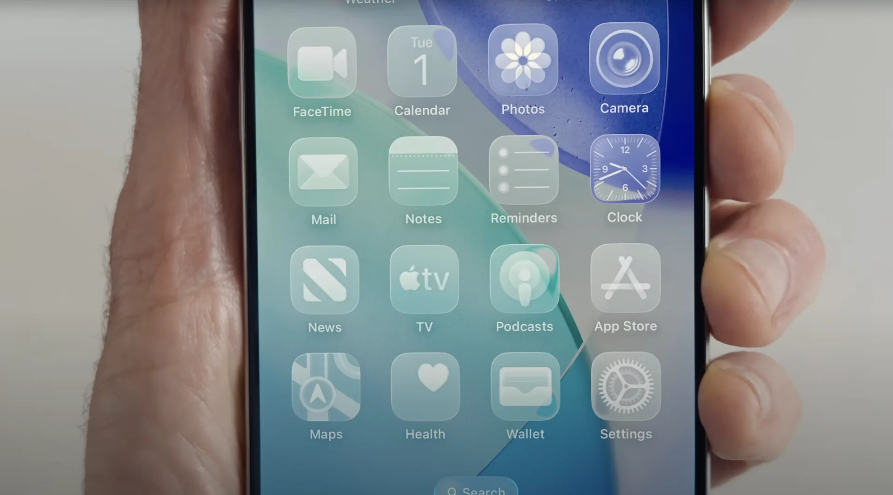
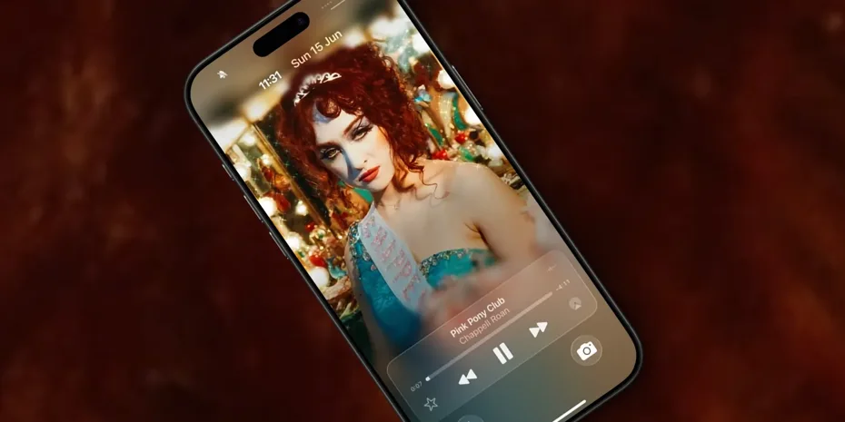

1. Liquid Glass 液態玻璃風格設計
在 iOS 26 也帶來了自 iOS 7 推出扁平化設計以來，開啟了簡潔、清爽的新時代，也具突破性的視覺改版。全新 iOS 26 設計語言被命名為 「Liquid
Glass（液態玻璃）」，主要靈感也來自蘋果自家 visionOS，強調通透感與光影的動態變化，並進一步拓展到 iPhone 與 iPad 的日常介面。
「Liquid Glass」並非單純的視覺美化，而是一種全新的介面體驗，蘋果將通透質感與動態光影效果深度融合，讓介面在不同情境下呈現出更自然的深度與變化。
在鎖定畫面也新增「空間場景」（Spatial Scenes） 新功能，這項新技術能將原本的 2D 照片，即時轉換成立體 3D
桌布，只要需選擇一張照片設定成桌布，系統便會自動運算前後景深，生成具層次感的立體效果。
在啟用空間場景後，當 iPhone 隨著手持角度傾斜時，整體畫面也會隨之產生深度變化，帶來接近裸視 3D 的沉浸體驗，空間場景還能透過更精細的景深運算，讓桌布中的人物、景物能真實浮現於畫面之中。
2. Apple Music動態專輯
在 iOS 26 中，蘋果還替鎖定畫面新增全新「Apple Music動態專輯」效果，要是播放音樂時， iPhone 鎖定畫面也會將專輯封面轉換為全螢幕顯示，同時還具備動態展開動畫效果，也讓鎖定畫面更加沉浸與具備視覺張力。
3. 自訂貪睡鬧鐘時間

iPhone內建時鐘App算是很多人每天都會設定鬧鐘的首選工具，不過長期都無法調整鬧鐘內建9分鐘貪睡時間，不過就在 iOS 26 的推出， 蘋果開放 iPhone 使用者為每一組鬧鐘個別設定貪睡時間，從 1分鐘到 15 分鐘皆可自由選擇，預設值仍維持 9 分鐘。
支援裝置清單
- iPhone 16e
- iPhone 16
- iPhone 16 Plus
- iPhone 16 Pro
- iPhone 16 Pro Max
- iPhone 15
- iPhone 15 Plus
- iPhone 15 Pro
- iPhone 15 Pro Max
- iPhone 14
- iPhone 14 Plus
- iPhone 14 Pro
- iPhone 14 Pro Max
- iPhone 13
- iPhone 13 mini
- iPhone 13 Pro
- iPhone 13 Pro Max
- iPhone 12
- iPhone 12 mini
- iPhone 12 Pro
- iPhone 12 Pro Max
- iPhone 11
- iPhone 11 Pro
- iPhone 11 Pro Max
- iPhone SE (第 2 代或更新機型)
常見問題 (FAQ)
Q： 更新後 iPhone 過熱
A： 關閉背景處理，減輕 CPU 負擔
Q： 更新後電池耗電快
A： 位置服務改成「僅限使用時」
Q： iPhone 變得很卡、很慢
A： 關閉背景執行的 App